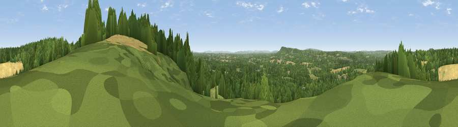

Viewpoint near Shamley Green
#21852 in England · top 9% of its area beats it · near Shamley Green · path 235 mWhere it is
The exact computed spot (TQ 04775 43125). Click the marker for map links.
Public access: the nearest public right of way is about 235 m away — the final stretch may cross private land. Computed from Natural England's CRoW access layer and OpenStreetMap rights of way — not the legal definitive map. Always verify locally.
The view, rendered

A 360° render of this exact spot computed from the terrain model, tree cover and land cover — summer colours, afternoon light, calibrated against photographs of famous viewpoints. Real trees, hedges and buildings will differ in detail.
The panorama
Grey silhouette: terrain skyline in each direction (720 bearings, Earth curvature and refraction included). Dashed green: skyline with trees (+15 m) and buildings (+8 m) as obstacles. Blue strip: how far the ground is visible on each bearing.
Where the view opens
Wedge length = distance to the farthest visible ground on that bearing (vegetation-aware). Rings at 10, 25 and 50 km.
What fills the view
56% woodland · 34% grassland · 8% cropland ·
Angular shares of the visible panorama (visual magnitude), not map area. Landscape diversity 0.42 (0–1 Shannon).
Key numbers
More beautiful places nearby
The staircase of upgrades: each row has a higher view potential than everything closer. Driving times are estimates from straight-line distance, calibrated against real road routing — check an actual route before setting out.
| Place | Direction | Drive | Score |
|---|---|---|---|
| Viewpoint near Ewhurst | ESE · 3 km | ~7 min | 63.9 |
| Pitch Hill | ESE · 4 km | ~8 min | 64.4 |
| Viewpoint near Holmbury St Mary | E · 6 km | ~12 min | 67.0 |
| Viewpoint near Coldharbour | E · 10 km | ~19 min | 70.0 |
| Viewpoint near Fernhurst | SW · 19 km | ~32 min | 75.1 |
| Barlavington Down | SSW · 29 km | ~46 min | 77.3 |
| Viewpoint near Amberley | S · 31 km | ~48 min | 82.3 |
| Bignor Hill | SSW · 31 km | ~48 min | 84.4 |
51.17777, -0.50249 · source: screening · position refined by local search. Computed location — check access rights before visiting.